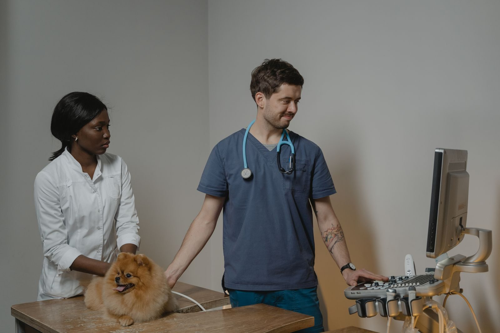
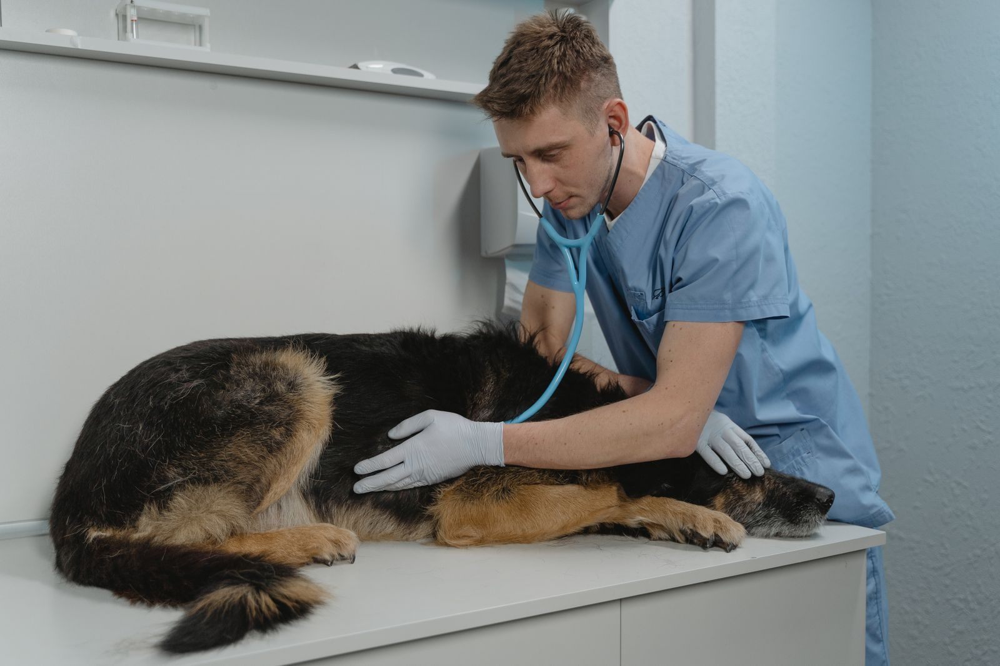
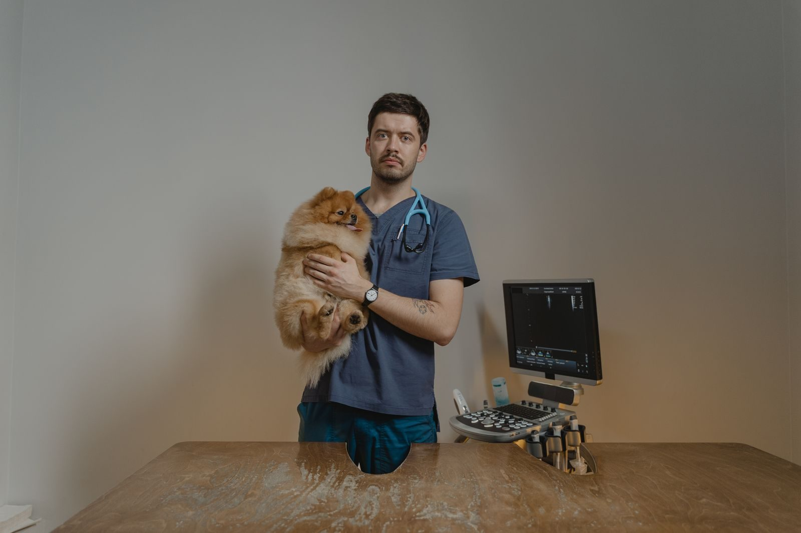
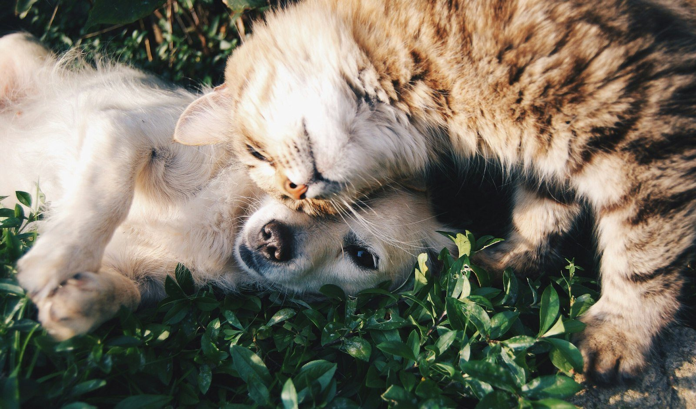
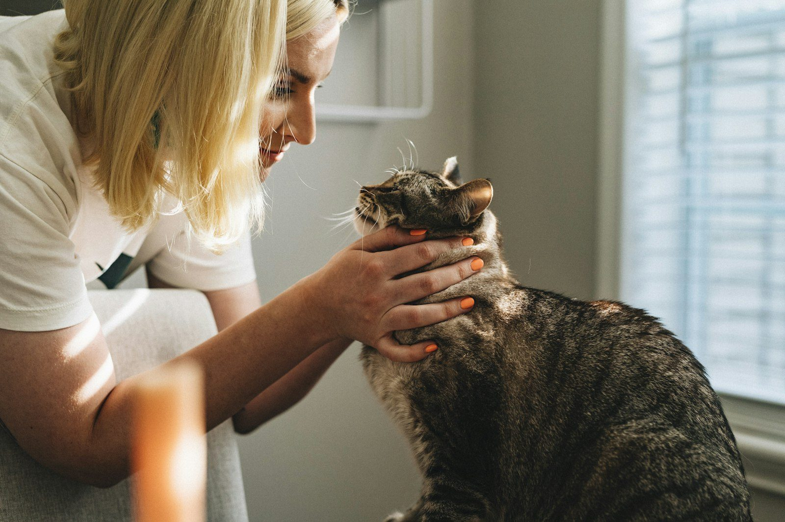

Diagnóstico por imagen
Rayos X y ultrasonido para orientar el tratamiento con mayor certeza.

Consulta, cirugía, ortopedia y diagnóstico por imagen en un solo lugar. 4.6 estrellas y 282 reseñas en Google.
Capacidades del hospital
Según la información pública del hospital y del MVZ Manuel Rojano, el equipo trabaja cirugía de tejidos blandos, ortopedia, diagnóstico por imagen, laboratorio, dermatología y crioterapia. También se publican consulta, vacunación y desparasitación.

Rayos X y ultrasonido para orientar el tratamiento con mayor certeza.

Cirugía de tejidos blandos y ortopedia.
El hospital publica horario de consulta todos los días.

Atención de pequeñas especies (perros y gatos).
Las fotografías son de stock (Pexels y Unsplash) y no muestran las instalaciones ni al equipo de Perro Mestizo.

El hospital
En listados públicos, el MVZ Manuel (Juan Manuel) Rojano se presenta con enfoque en cirugía de tejidos blandos, ortopedia y diagnóstico por imagen.
4.6 de 5, con 282 reseñas en Google.
★★★★★“Llevamos a Jaspe con luxación de cadera por atropello y el diagnóstico fue certero… rayos X, ecografías, medicación previa y cirugía con médicos ortopedistas. El personal de recepción muy cordial.”
Reseña en Google · junio de 2025
★★★★★“Sin duda me han ayudado con más de una mascota, y para esos imprevistos cuentan con pago con tarjeta. Siempre hay alguien de guardia. El personal me parece muy profesional.”
Reseña en Google · enero de 2026
★★★★★“L@s médic@s son muy profesionales y atentos con las mascotas. Sanaron a mi perrita de una severa lesión, y su recuperación fue muy rápida.”
Reseña en Google · octubre de 2025
★★★★★“Excelente atención… el lugar muy limpio y organizado, sin duda el Veterinario Juan es y será el vet de cabecera de mis perros.”
Reseña en Google · noviembre de 2024
Preguntas frecuentes
Lunes a viernes de 9:00 a 19:30, sábado de 9:30 a 17:30 y domingo de 11:00 a 17:00.
Ofrecemos cirugía, ortopedia, rayos X, ultrasonido, laboratorio, dermatología y crioterapia, además de consulta, vacunación y desparasitación.
Pregunta al llegar las formas de pago disponibles. No hay un aviso de medios de pago en un sitio propio de la clínica.
Calle 16 de Septiembre 34, San Salvador Atenco, C.P. 56300, Estado de México.
Llama al 595 101 7486 o escríbenos por WhatsApp.
Sí. El hospital se presenta para pequeñas especies (perros y gatos).
Llama o escribe y te confirmamos el horario más cercano.
WhatsApp 595 101 7486Ubicación
Calle 16 de Septiembre 34
San Salvador Atenco, 56300, Méx.
| Lunes a viernes | 9:00 – 19:30 |
| Sábado | 9:30 – 17:30 |
| Domingo | 11:00 – 17:00 |